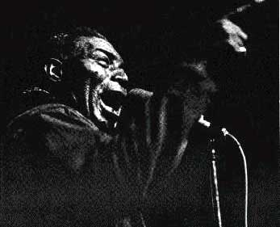
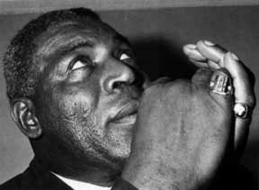

“Когда я услыхал его, я сказал: вот это по мне. Это то, в чем душа человеческая никогда не умирает… Он, бывало, сиживал у меня, вытянув свои ножищи, так что не пройти, наигрывая что-то на губной гармошке, и скажу я вам: лучшее шоу, которое можно найти сегодня – это одна из тех посиделок Барнетта в моей студии. Видели бы вы эту страсть в его лице, когда он пел… А пел он чертовски душевно.”Такие эмоциональные воспоминания остались у директора мемфисской студии звукозаписи Sun Records Сэма Филлипса (Sam Phillips) от первой встречи с Хаулином Вульфом в 1950-м. Того самого директора той самой студии, на которой “писались” впоследствии Элвис, Джерри Ли Льюис, Карл Перкинс, Рой Орбисон… Тогда, в 50-ом, Вульф уже был блюзовым авторитетом, имел за плечами солидный опыт и даже вел свое шоу на местном радио. Да и стукнуло ему к тому времени уже сорок. Но вот до студии добрался только сейчас.
А начиналось все аж в 1910 году, 10 июня, когда у фермера Дока Барнетта и его жены Гертруды родился очередной ребенок, нареченный Честером (Chester Arthur Burnett). Вест Пойнт, Миссисипи – вот то благословенное место под солнцем, где это произошло. Хватало там и солнца, и работы на хлопковых плантациях. Хватало и переездов с места на место – типичных для фермерских семей – в поисках куска хлеба посытнее. Когда Честеру исполняется 13, семья переезжает на плантации Миссисипской Дельты близ города Ruleville. Музыкальный опыт “трудного ребенка”, как уже успели окрестить Честера, к тому времени сводился к пению в баптистской церкви по воскресениям. Пятью годами позже отец, вряд ли осознавая серьезность момента, снабдит его первой гитарой. Примерно в то же самое время Барнетт-младший встретился с легендарным Чарли Пэттоном (Charlie Patton), блюзовым “столпом” того времени.
“С этого человека все для меня началось,” – вспоминал Барнетт, — “Он привил мне такие вкусы. Я попросил его научить меня и по вечерам, после работы, стал заходить к нему”. Именно Пэттон познакомил его с основами блюзового стиля Дельты. Кроме того, у Пэттона Честер позаимствовал кое-что из того, что называется “делать шоу”, а именно манеру поведения на сцене, многие их тех трюков – паданье на колени, ползанье на четвереньках, вопли и завывания, лежа на спине, — которые впоследствии будут так впечатлять публику на концертах самого Барнетта.
Но это потом. А пока дело ограничивалось случайными выступлениями в местных забегаловках, на вечеринках, а то и просто на улицах. О том, чтобы бросить фермерство и всерьез заняться музыкой, речи еще не шло.
В 1933 году семья снова переезжает. На этот раз на плантации Nat Phillips’, в Арканзас. Там Барнетта ждет еще одна “эпохальная” встреча с очередной блюзовой легендой Сонни Бой Вильямсоном (Sonny Boy Williamson, наст. имя – Alex Miller), который в свою очередь учит его игре на губной гармошке. Чуть позже эта парочка скооперируется и, забыв про тяжкие обязанности фермерского быта, отправится колесить по Дельте. (Дальше – больше. Отношения музыкантов станут чуть ли ни родственными, т.к. Вильямсон женится на сводной сестре Барнетта Мэри). Аудитория стандартная – бары, улицы… Во время этих разъездов пути Барнетта частенько пересекались с путями практически всех заметных блюзменов того времени, и вскоре он стал “широко известным в узких кругах” музыкантов Миссисипи. Женился – к тому времени уже вторично. И если первый брак был мимолетным увлечением, то второй, с мисс Лили Хэндли (Lillie Handley), оказался союзом на всю оставшуюся жизнь.
Уже тогда он заслужил от коллег прозвища одно другого красноречивее – Bull Cow (здоровяк), Big Foot (Снежный человек). Действительно, незаметной фигурой Барнетт не был. С ростом 6 футов 6 дюймов и весом под 300 фунтов, он резко выделялся на фоне окружающих. От скромности тоже не страдал, и его необузданный нрав, нарочито диковатые замашки вкупе с выразительной внешностью привлекали пристальное внимание в любой компании. Многим (даже конкурентам) он внушал уважение, некоторым – благоговейный страх. Джонни Шайнс (Johnny Shines) – один из музыкантов, с которыми Барнетт работал в те времена – сравнивал его с диким зверем и признавался, что в первый раз даже побоялся протянуть ему руку.
Персона с такими габаритами на сцене мгновенно запоминалась. Но главной отличительной чертой, которой Барнетт навсегда “застолбил” себе место в блюзовой галерее славы, был и остается его неподражаемый голос. “Выходивший из самых утробных глубин”, “клокочущий и ревущий”, гортанный, свирепый, пронизывающий – можно бесконечно подбирать эпитеты для того, что, услышав однажды, уже ни с чем не спутаешь. Его агрессивный вокальный стиль, сочетание низкого обволакивающего голосового диапазона с фальцетными завываниями, холодящими кровь, поражает воображение и до сих пор плодит массу подражателей.
Такой вот “дикарь” будоражил публику миссисипской глубинки с переменным успехом вплоть до 1941 года, когда Барнетту настал черед заступить на защиту родины. Время было неспокойным, но Честеру повезло – в военных действиях против нацистской Германии он участия не принимал, хотя и отслужил в армии от звонка до звонка (1941-1945 гг.). После демобилизации вернулся в родные места и даже на пару лет вновь занялся фермерством. Но долго выносить суровый фермерский уклад “душа поэта” не могла. К 1948 году он сколотил свой собственный “электрический” бэнд – Junior Parker, James Cotton, Matt Murphy, Pat Hare, Willie Johnson – и вновь принялся за старое.

Если и можно говорить о каком-то взлете в относительно ровной карьере Барнетта, то он приходится именно на это время. Только в 38 лет ему впервые по-настоящему выпадает шанс – поступило предложение поработать в западном Мемфисе диск-жокеем на радиостанции KWEM, ориентированной большей частью на чернокожую аудиторию. И вот Барнетт уже во всю заправляет там своим собственным 30-тиминутным шоу, которое перемежается рекламой зерновых культур и фермерского инвентаря. Успех шоу способствует тому, что его ведущему даже предлагают работу рекламного агента в местном “сельпо”. Во время этой совмещенной работы – днем в магазине, вечером на радио – к нему прочно прилипает новое прозвище. Отныне он раз и на всегда Howlin’ Wolf, Воющий Волк Дельты, — характеристика как нельзя более подходящая для его манеры пения, неуемной энергии и сексуальной бравады на сцене.Радио – вещь демократичная, доступная всем, и вскоре шоу Вульфа попадает в поле зрения (скорее — слуха) уже упомянутого Сэма Филлипса. Для Вульфа открываются двери его студии, и там он записывает свой дебютный сингл “Moanin’ at Midnight”/ “How Many More Years” с Айком Тернером (Ike Turner) за пианино и Вилли Джонсоном на гитаре. Филлипс понимал, что несмотря на хитовость этих вещей, сил на их раскрутку у него не хватит, и решил выгодно их продать. Предприимчивый Сэм предложил запись сразу двум компаниям – лос-анжелесской RPM, собственности братьев Бихари (Bihari), и чикагской "Chess Records", проекту не менее честолюбивых братьев Чесс. Между компаниями произошло даже нечто вроде длительной “разборки” за этот сингл. В конце концов диск был выпущен на RPM, но правами на него обладала "Chess Records", которая в итоге и заполучила Вульфа. В обмен RPM достался некий Rosco Gordon. Вульф, совсем уж было собравшийся в Лос-Анжелес, поехал все-таки в Чикаго. “Единственный, кто выбрался с Юга как джентльмен, ” – говорили о нем коллеги. На дворе к тому времени стояла уже осень 1952 года.
Братья Чесс не зря так настойчиво переманивали Вульфа в свой лагерь. Запись, по поводу которой было сломано столько копий, разошлась тиражом в 60 тысяч – весьма солидный показатель для того времени. Впоследствии Вульф оставался верен "Chess" до конца своей карьеры.
Самоуверенный, знающий себе цену, с контрактом в кармане, Хаулин Вульф окунается в до предела насыщенную атмосферу Чикаго пятидесятых. О том, что она из себя представляла, уже не раз писалось, в том числе и на страницах данного издания. Однако дадим слово очевидцу. Хуберт Самлин (Hubert Sumlin), гитарист, которого Вульф вытянул с собой из Мемфиса, и который с 1956 года был постоянным участником его бэнда вплоть до самых последних дней: “Музыка в Чикаго звучала лучше, с большей искренностью. Это был просто блюз. Его ведь невозможно слишком осовременить… Традиция вышла из Нового Орлеана, из Теннесси, Арканзаса – у нас там было разное звучание откуда угодно. Когда мы попали в Чикаго, там были все эти парни из Нового Орлеана, с Миссисипи, ребята с Юга – все тогда собрались в одном месте. Каждый играл свое. У того была пара аккордов, у этого пара… Мне понадобилось время, чтобы выработать стиль. Пришлось многому учиться”.
Приходилось ли чему-либо учиться Вульфу, который сам мог научить кого угодно, неизвестно. Однако музыкальный климат Чикаго, знакомства с музыкантами, которые были собраны под крылом "Chess Records" и проповедовали “новый стиль” – жесткий, плотный, местами даже свирепый электрический блюз, — не могли не повлиять на Вульфа. Тем не менее южные блюзовые корни были еще глубоки, и он достаточно неохотно приноравливался к требованиям времени. Гораздо более неохотно, чем тот же Мадди Уотерс (Muddy Waters), извечный коллега-соперник Вульфа. Споры о том, кто из этих двоих “круче”, не утихали в те времена. Данный вопрос является предметом дискуссий даже сейчас. Отношения музыкантов никогда не были слишком теплыми, однако до банальных перепалок дело не доходило – со скрипом, они все же признавали авторитет друг друга. Но соперничество было неприкрытым, причем пальма первенства не всегда доставалась Вульфу. Даже верный Хуберт Самлин как-то не утерпел и сбежал к Уотерсу. Да и как не сбежать, если у этого самого Уотерса заработать на первых порах можно было втрое больше, чем у Вульфа. И гастролировал тот по всей стране, тогда как аудитория Вульфа ограничивалась пока лишь Чикаго и его окрестностями. Однако Самлин вскоре вернулся к старому патрону и больше уже никуда не бегал. А вот каким образом сравнивал Вульфа и Уотерса “серый кардинал блюза”, автор практически всего золотого блюзового фонда, басист Вилли Диксон (Willie Dixon): “Мадди – тот тип личности, которому ты можешь доверить любые тексты, он как говорится, быстр в учении. Вульф – этому не стоит давать слишком много текста, поскольку он его все равно перековеркает. А если даже споет правильно, то все равно не с тем смыслом.” Однако неисчерпаемого репертуара Диксона с лихвой хватало не только для этих двоих. На его материале “паразитируют” все, кому не лень, вплоть до наших дней. И если такие неоспоримые хиты, как “Hoochie Coochie Man” и “I Just Want to Make Love to You” достались Уотерсу, то Вульфа Диксон снабдил не менее забойными “Three Hundred Pounds of Joy”, “Wang-Dang-Doodle”, “Back Door Man” и еще несчетным количеством “нетленки”.
Чтобы закончить тему о непростых взаимоотношениях Уотерса и Вульфа вновь сошлемся на Хуберта Самлина: “Спустя многие годы, на Ann Arbor Blues Festival, где-то в семидесятые случилось нечто, чего я никогда раньше не видел. Они встретились – оба были уже больны. Встретились и стали обниматься, отослали своих музыкантов для того, чтобы поговорить по душам. Наконец-то решились. Это был первый раз, когда я видел этих парней вместе. Это походило на воссоединение, на возвращение домой. Они пили пиво, обнимались и плакали, вели себя как дети…” Такой вот момент истины.
На протяжение 50-х – начала 60-х основной для Вульфа является его работа в чикагских клубах, таких как “708” и “Syvio’s Lounge”. Сохранились воспоминания очевидцев, описывающие Вульфа “в деле”: “Его глаза горели и чуть не вылезали из орбит… Он распахнул свой огромный рот и начал петь. Губы едва не закручивались вокруг микрофона, и, казалось, он его сейчас съест. Вольф выглядел достаточно чокнутым, чтобы сделать это. Во время пения ему не было дела до публики, до своих музыкантов. Он был действительно свирепым, когда пел.”
Вольф также активен и в студии. В 1956-1957 годы наблюдается пик его популярности с точки зрения продаж дисков. Записываются такие хиты, как “Smokestack Lightnin’ ” и “Killing Floor”с гитаристами Вилли Джонсоном и Хубертом Самлином, Хоши Ли Кеннардом (Hosea Lee Kennard) за пианино, Диксоном на басу и Эрлом Филлиплом (Earl Phillips) на ударных. Кеннард и Самлин — личности, во многом обеспечившие записям Вульфа того периода их неповторимое звучание. Гитарные пассажи Самлина как нельзя лучше сочетались с вульфовским голосом, его воем и стонами. Примерно в то же время записываются “Howlin’ For My Baby”, “Wang-Dang-Doodle” и “Shake For Me” при участии таких замечательных пианистов, как Отис Спэнн (Otis Spann) и Джонни Джонс (Johnny Johns).
Шестидесятые принесли с собой эпоху безраздельного господства рок-н-ролла. Однако в это время Вульф сумел не только сохранить свою аудиторию, но и существенно расширить ее. Он не только активно гастролирует по Штатам. В 1964 году, когда наблюдается значительный всплеск интереса к традиционному блюзу, Вульф впервые приезжает в Европу, в Великобританию, в рамках чессовского “Шоу возрождения блюза” и в дальнейшем не раз посещает сей гостеприимный континент. К своему большому удивлению он обнаружил, что все эти бешено популярные белые ребята вроде “Rolling Stones”, “Yardbirds” и им подобных во всю записывают и популяризируют “его” музыку. Парадокс, но ему, одному из отцов-основателей нового “послевоенного” блюза, частенько приходилось выступать на разогреве у этих молокососов, которые чуть ли ни во внуки ему годились.
Благодаря “роллингам” Вульф даже попадает на британское телевидение, в тинейджерское Shindig television show. Роль Stones в популяризации блюза на британской земле красноречиво обозначил еще Мадди Уотерс: “До “Rolling Stones” люди ничего не знали обо мне и не хотели ничего знать. Я делал так называемые “проходные” записи. Но появились Stones, другие английские группы, стали играть эту музыку, и теперь дети покупают мои записи и слушают их.” Впрочем, и Уотерс, и Вульф не всегда были столь благосклонны по отношению к своим последователям. Тем не менее в 1971 году выходит “London Sessions”, альбом, в записи которого принимают участие Эрик Клэптон, Ринго Старр, Билл Уаймен и Чарли Уоттс.
Вообще, влияние чикагской блюзовой традиции на развитие рок-музыки – тема для отдельного разговора. Его не избежал практически ни один известный рокер нового времени. Кроме уже упомянутых “Rolling Stones”, влияние Вульфа на свое творчество признавали “The Animals”, Jimi Hendrix, Janis Joplin и многие другие. Тот же Моррисон из “The Doors” на своем дебютном альбоме в 1967 году вопил не что-нибудь, а “Back Door Man”, творение Диксона – Барнетта.
Из студийных работ Вульфа этого времени прежде всего стоит выделить его второй LP, альбом “Howlin’ Wolf”. Это классическая сборка из 12 вещей, записанных в разное время, начиная с самого начала его опытов аудиозаписи. По изображению на конверте пластинки он стал известен публике под названием “Rocking Chair Album”. Интересно мнение самого Вульфа об этом альбоме. Оно весьма кратко: “dogshit” (дерьмо собачье). Что ж, возможно ему было с чем сравнивать. Однако для большинства поклонников данная запись является хрестоматией вульфовского блюза, дающей наиболее полное представление о его творчестве на протяжение почти двух десятилетий студийной работы.
Вульф по-прежнему постоянно гастролирует, однако здоровье начинает сдавать. Все почти со стопроцентной точностью напоминает сюжет, описанный в его же собственной песне “Goin’ Down Slow”: “Я здорово веселился, – даже если уже не оклемаюсь. Мое здоровье слабеет. Я потихоньку дохожу.” Вульф страдает от хронических почечных болей и даже избегает выступать в городах, где нет диализных машин. Но после каждой такой выматывающей процедуры он вновь спешит на концерты. К концу 1975 года он уже окончательно выдохся. Несколько сердечных приступов, недавно обнаруженный рак… Вульфа помещают в Veterans Administration Hospital, в Чикаго. 10 января 1976 года его не стало.
P.S. На “просвещенном” Западе любитель блюза может запросто приобрести в магазине лицензионный компакт Хаулина Вульфа и наслаждаться звучанием его бессмертного голоса. В этом помогут многочисленные сборники материалов, записанных на "Chess Records", в частности, подборка из трех дисков “Howlin’ Wolf” (MCA/Chess CHD3-9332), где представлено практически все его творчество, “The Chess Masters” (Blue Moon CDBM 087), образец ранних опытов из эпохи пятидесятых, и масса другого материала. В нашей ситуации все гораздо сложнее. Однако кое-что можно найти и у нас.
Сегодня в Минске в музыкальных магазинах периодически появляется российский пиратский диск ‘Chicago Blue” – довольно хилая попытка показать, что из себя представлял вульфовский блюз. Кроме того, в 1989 в серии “Легенды блюза” тиражом в 5 тысяч экземпляров “Мелодия” выпустила пластинку (также явно пиратскую) с записями Волка. Как ни удивительно, данная компиляция получилась весьма удачной. Записи 57-70-х годов – это Вульф “в самом соку”. Композиции, собранные на диске – несомненно его лучшие вещи (некоторые из лучших). Его голос притягивает, шокирует, завораживает. Его не забудешь. Его хочется услышать снова и снова. Как говорится, хорошего человека должно быть много.
Максим ПАНАСЕНКО.
Перепечатано из журнала
Jazz-квадрат.